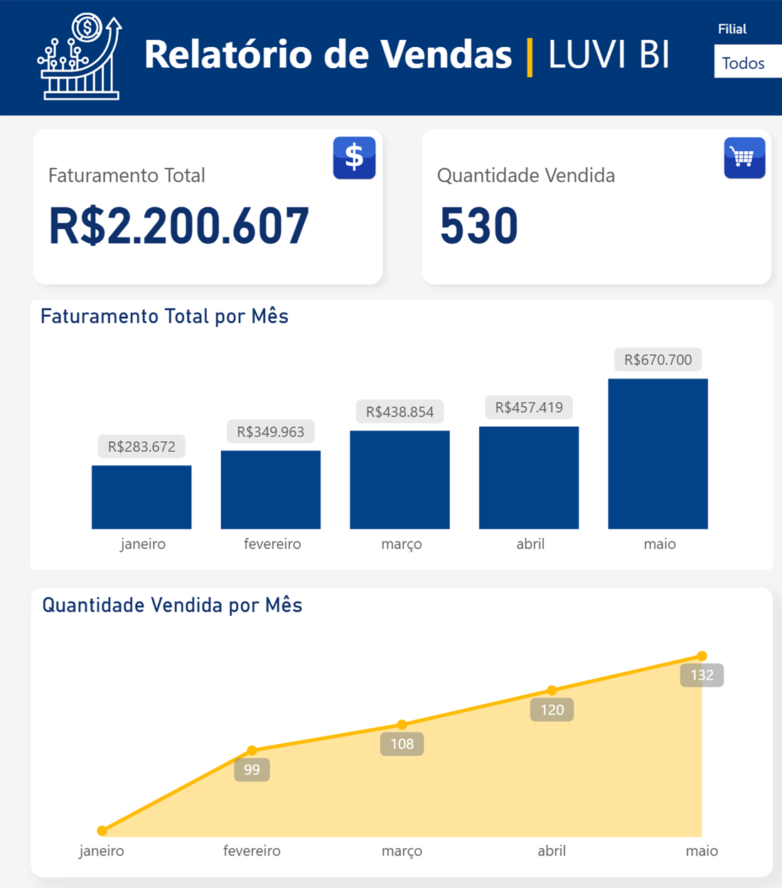
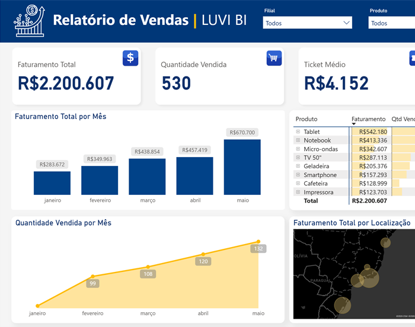
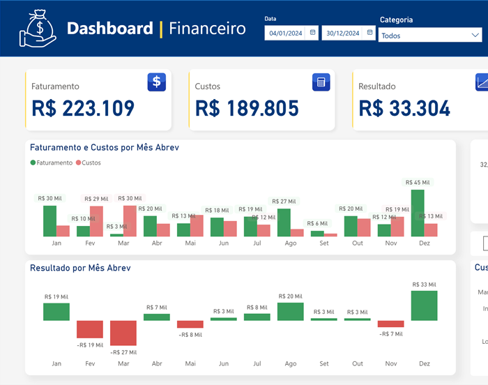
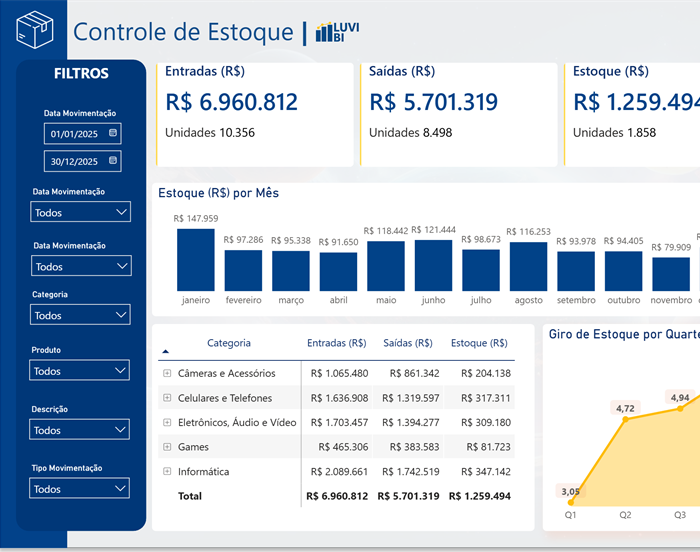
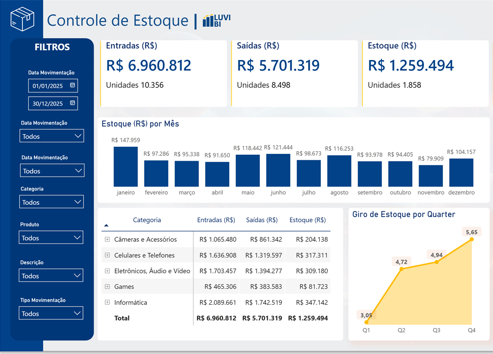

3 painéis de exemplo funcionando ao vivo
Dashboards Power BI para empresas
Conectamos seu ERP, suas planilhas e seus bancos de dados ao Power BI e entregamos painéis que você abre no celular, no tablet ou no computador.

Dashboards de exemplo ao vivo
Filtre por período, filial e produto, como seu time faria no dia a dia.
- Relatório de Vendas
Faturamento, ticket médio, ranking de produtos e desempenho por vendedor. Ver vendas em tela cheia
Comercial - Dashboard Financeiro
Resultado, margem líquida, custos fixos e variáveis por centro de custo. Ver finanças em tela cheia
Financeiro - Controle de Estoque
Entradas, saídas, posição por produto e giro de estoque por trimestre. Ver estoque em tela cheia
Operações



Gestão no celular
Monitore seu negócio a qualquer hora, em qualquer lugar. A LUVI BI transforma seus dados em dashboards que cabem no seu bolso.
Seus dados em um só dashboard
Integramos suas fontes e construímos um modelo confiável e escalável por trás de cada painel.
Processo em cinco etapas
Do primeiro contato à entrega, com escopo, prazo e investimento combinados antes de começar.
- Conversa inicial
Entendemos sua operação, onde estão os dados e quais decisões pedem mais clareza.
1 - Proposta e escopo
Você recebe o que será entregue, o prazo e o investimento.
2 - Conexão e modelagem
Integramos ERP, planilhas e bancos de dados em um modelo confiável.
3 - Entrega e treinamento
O painel entra no ar e sua equipe aprende a usar sozinha.
4 - Suporte e evolução
Suporte depois da entrega e planos de manutenção para o relatório crescer com o negócio.
5
